Questão 1 · Complexo QRS · 4000189235O eletrocardiograma, também chamado de ECG, é o registro gráfico dos fenômenos elétricos do músculo cardíaco ou do coração. Com base no tema, é CORRETO afirmar:
A O complexo QRS representa a despolarização e a condução do impulso nos ventrículos.
B O ECG é registrado em papel gráfico, na velocidade (linha vertical) de 20 mm/s, ou 1mm a cada 0,04 segundos.
C As derivações periféricas são obtidas no plano horizontal, pela colocação de eletrodos no tórax do paciente.
D O posicionamento do eletrodo para derivação precordial V4 deve ser de 4° espaço intercostal à direita, próximo ao esterno.
Questão 2 · Hipercalemia · Distúrbios eletrolíticos · 4000188746Maria, 66 anos de idade, diabética e hipertensa, em uso de enalapril e metformina, comparece a consulta ambulatorial com queixa de astenia e turvação visual há 2 dias. E encaminhada ao Departamento de Emergência após realizar o seguinte eletrocardiograma. Qual deve ser a conduta imediata?

A Atropina.
B Encaminhar para marcapasso definitivo.
C Trombólise.
D Gluconato de cálcio.
E Marcapasso transcutâneo.
Questão 3 · Aumentos cavitários · 4000187276HMN, masculino de 57 anos, grande tabagista e obeso, analisando se ECG foi encontrado Sobrecarga Atrial Esquerda (SAE) com onda P com componente negativo aumentado ( nal lento e profundo) na derivação V1. Podemos indicar como correto que:
A A área da fase negativa de pelo menos 0,09 mm/s, ou igual ou superior a 1 mm², constitui o Índice de Morris, que apresenta melhor sensibilidade que o critério isolado de duração aumentada.
B A área da fase negativa de pelo menos 0,04 mm/s, ou igual ou superior a 11 mm², constitui o Índice de Morris, que apresenta melhor sensibilidade que o critério isolado de duração aumentada.
C A área da fase negativa de pelo menos 0,04 mm/s, ou igual ou superior a 1 mm², constitui o Índice de Morris, que apresenta pior sensibilidade que o critério isolado de duração aumentada.
D A área da fase negativa de pelo menos 0,04 mm/s, ou igual ou superior a 1 mm², constitui o Índice de Morris, que apresenta melhor sensibilidade que o critério isolado de duração aumentada.
Questão 4 · Aumentos cavitários · 4000187271Sobrecarga Atrial Direita (SAD), está de acordo com o seguinte item correto:
A A onda P apresenta-se não apiculada com amplitude acima de 0,25 mV ou 2,5 mm.
B A onda P apresenta-se apiculada com amplitude acima de 0,25 mV ou 2,5 mm.
C A onda P apresenta-se apiculada com amplitude abaixo de 0,25 mV ou 2,5 mm.
D A onda P apresenta-se apiculada com amplitude acima de 0,25 mV ou 3,5 mm.
Questão 5 · Diagnóstico dif erencial de supra · 4000186478Assinale a alternativa correta: Quais as condições que podem mimetizar no eletrocardiograma o infarto com supradesnivelamento do segmento ST?
A Repolarização precoce
B Miocardite
C Síndrome de Takotsubo (cardiomiopatia por stress)
D Todas acima
Questão 6 · Eletrocardiograma · Alterações eletrocardiográf icas mais comuns · 4000186373São causas de QRS com baixa voltagem no eletrocardiograma.
A Anasarca e Síndrome de Wolf Parkinson White.
B Derrame pericárdico e DPOC.
C Miocardite e Tetralogia de Fallot.
D Intoxicação por lítio e DPOC.
E Febre Reumática e aneurisma de aorta.
Questão 7 · Ritmo cardíaco · Eletrocardiograma · Rotina de avaliação do eletrocardiograma · 4000184852Pode-se afirmar que um eletrocardiograma em ritmo sinusal, necessariamente, apresenta:
A onda P positiva em todas as derivações periféricas.
B complexo QRS com duração inferior a 130ms.
C eixo elétrico entre - 30º e + 90º.
D onda P positiva em DI e negativa em aVr.
Questão 8 · Bradiarritmias · Bloqueios · 4000184114Homem, 50 anos, hipertenso, em uso de propranolol 120 mg/dia, procura a unidade de pronto atendimento por palpitação há uma semana. O exame clínico é normal, com frequência cardíaca de 56 bpm. O ECG realizado na unidade de saúde está mostrado a seguir. Qual o ritmo cardíaco mostrado no eletrocardiograma?
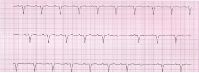
A BAV de segundo grau Mobitz I.
B Bradicardia sinusal.
C BAV de primeiro grau.
D BAV de segundo grau Mobitz II.
Questão 9 · Alterações eletrocardiográf icas mais comuns · 4000183290Uma paciente de 71 anos de idade, sem antecedentes patológicos conhecidos, apresentou, subitamente, vômitos, hipertensão arterial, polaciúria e confusão mental. Durante a consulta, foi realizado eletrocardiograma, que, a primeira vista, não evidenciou anormalidades. O ritmo era sinusal e a frequência cardíaca, assim como as ondas P, QRS e T, estavam normais. Uma análise mais minuciosa identi cou alterações que sugerem encurtamento do intervalo QT. A imagem a seguir representa o eletrocardiograma dessa paciente. Assinale a alternativa que apresenta a alteração hidroeletrolítica mais provável no caso clínico acima.
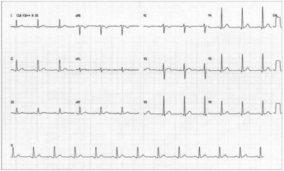
A hipocalemia
B hipercalemia
C hipomagnesemia
D hipocalcemia
E hipercalcemia
Questão 10 · Distúrbios de ritmo cardíaco · Bloqueios · 4000191054Mulher, 55 anos, natural do interior de Minas Gerais, apresenta queixa de palpitações há algum tempo, com piora nos últimos dois meses. Apresentou dois episódios de síncope nesse período e deu entrada no serviço de emergência com queixa de astenia, tontura, turvação visual, falta de ar, edema nas pernas e desconforto torácico. Foi realizado um eletrocardiograma que está ilustrado a seguir. Assinale a alternativa que apresenta a causa mais provável da sintomatologia apresentada
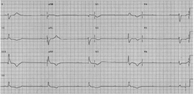
A Taquicardia atrial com condução atrioventricular variável gerando baixo débito.
B Síndrome coronariana aguda.
C Insuficiência cardíaca perfil C.
D Dissociação atrioventricular.
E Hipotensão postural por disautonomia.
Questão 11 · Distúrbios eletrolíticos · 4000169673Observe os eletrocardiogramas abaixo e assinale a alternativa CORRETA:
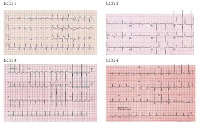
A O ECG 1 é de um paciente hipertenso estágio 3.
B O ECG 2 é de um paciente renal crônico com hipercalemia.
C O ECG 3 é de um paciente com bloqueio de ramo esquerdo.
D O ECG 4 é de uma pessoa normal.
Questão 12 · Eletrocardiograma · Cardiologia · 4000166917O eletrocardiograma realiza a reprodução grá ca da atividade elétrica do coração durante o seu funcionamento, registrada a partir da superfície do corpo. Quanto às principais alterações eletrocardiográ cas, onda P com orientação normal e frequência cardíaca < 50 bpm denotam:
A Parada sinusal.
B Bloqueio sinoatrial (BSA).
C Bradicardia sinusal.
D Bloqueio de ramo esquerdo (BRE).
Revisar: possível letra faltando em enunciado
Questão 13 · Eletrocardiograma · Cardiologia · 4000166198O posicionamento correto do eletrodo para a derivação torácica V4 do eletrocardiograma é no
A quinto espaço intercostal, na linha hemiclavicular esquerda.
B quinto espaço intercostal, entre a região paraesternal esquerda e a linha hemiclavicular esquerda.
C quinto espaço intercostal, na linha axilar média esquerda.
D quarto espaço intercostal, na região paraesternal direita.
E quarto espaço intercostal, na região paraesternal esquerda.
Questão 14 · Distúrbios eletrolíticos · 4000165562Mulher de 66 anos de idade, diabética e hipertensa, em uso de enalapril e metformina, comparece a consulta ambulatorial com queixa de astenia e turvação visual há 2 dias. É encaminhada ao Departamento de Emergência após realizar o seguinte eletrocardiograma. Qual deve ser a conduta imediata?

A Atropina.
B Marcapasso transcutâneo.
C Gluconato de cálcio.
D Trombólise.
Questão 15 · Eletrocardiograma · 4000146894Paciente do sexo masculino, 89 anos de idade, proveniente do interior do Piauí de área endêmica de Doença de Chagas foi admitido no pronto atendimento com quadro de síncope recorrente. É portador de cardiopatia chagásica e marca-passo cardíaco definitivo há 10 anos. Diante do traçado eletrocardiográfico obtido na admissão, qual o diagnóstico e a melhor conduta?
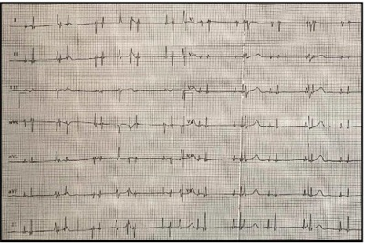
A Ritmo ectópico atrial; tratamento conservador.
B Taquicardia ventricular; cardioversão elétrica imediata.
C Fibrilação atrial aguda; iniciar anticoagulante oral e programar ecocardiogramatransesofágico para reversão da arritmia.
D Disfunção do marca-passo cardíaco; procedimento cirúrgico para troca de cabo-eletrodo.
E Marca-passo cardíaco com captura atrial e ventricular adequada; investigação da síncope com teste da mesa inclinada.
Questão 16 · Fisiologia Cardíaca e Eletrocardiograma · 4000146459Homem, 22 anos, vítima de queimadura em tórax, abdome e parte dos membros superiores, com superfície corpórea queimada de 52%, internado na UTI há 3 dias. Apesar da reposição volêmica, vem evoluindo com baixa diurese e valores crescentes de creatinina. Realizado ECG que é mostrado a seguir. Qual o diagnóstico?
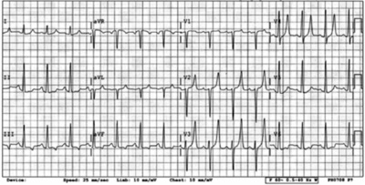
A Hipocalcemia.
B Hipopotassemia.
C Hiperpotassemia.
D Hiponatremia.
E Hipernatremia.
Questão 17 · Bradiarritmias · Eletrocardiograma · 4000145991Mulher, 63 anos de idade, admitida na sala de emergência com quadro de confusão mental e letargia há duas horas. Relatou também episódio de tontura ao se levantar da cama. Previamente independente para atividades básicas e instrumentais da vida diária. Com diagnóstico de hipertensão arterial sistêmica há 10 anos, infarto agudo do miocárdio há 3 anos. Faz uso de amlodipina 10mg por dia, AAS 100mg por dia e atorvastatina 40mg por dia. Ao exame clínico: abertura ocular ao chamado, resposta verbal confusa e obediência aos comandos. Frequência cardíaca: 38 batimentos/minuto; pressão arterial: 92 x 66 mmHg; frequência respiratória: 20 incursões/minuto; Saturação de O₂: 96% em ar ambiente. Sem outras alterações. Foi obtido um eletrocardiograma de 12 derivações, reproduzido a seguir: Quais são os diagnósticos eletrocardiográficos?

A Bloqueio atrioventricular de 2° grau Mobitz tipo II, bloqueio de ramo direito e bloqueio da divisão ântero-superior.
B Bloqueio atrioventricular de 2° grau Mobitz tipo I, bloqueio de ramo esquerdo e área elétrica inativa de parede inferior.
C Bloqueio atrioventricular de 2° grau Mobitz tipo I, bloqueio de ramo direito e bloqueio da divisão ântero-superior.
D Bloqueio atrioventricular de 2° grau Mobitz tipo II, bloqueio de ramo esquerdo e área elétrica inativa de parede inferior.
Questão 18 · Eletrocardiograma · 4000142492Observe a imagem e responda à questão O traçado apresentado é característico do padrão de
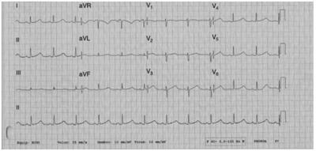
A normalidade.
B bloqueio AV.
C Hipertrofia atrial.
D intervalo QT longo.
E troca de eletrodos.
Questão 19 · Eletrocardiograma · 4000142491Observe a imagem e responda à questão O traçado apresentado é característico do padrão de
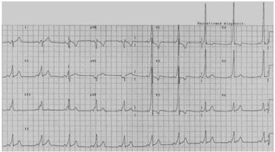
A normalidade.
B pré-excitação ventricular.
C QT longo.
D repolarização precoce.
E hipertrofia ventricular.
Questão 20 · Exames complementares · Cardiologia · Quadro clínico · 4000141126Homem, 42a, procurou o pronto atendimento com queixa de dor precordial há duas horas, ventilatório-dependente, piora quando se deita e melhora quando ca em pé. Refere também febre e mal-estar há quatro dias, com melhora após uso de paracetamol. Exame físico: = 38o C, PA= 112x86 mmHg; FC= 112 bpm, FR= 21 irpm; Coração: rangido de alta frequência, mais audível no final da expiração. Troponina= 123 ng/mL; ECG: O DIAGNÓSTICO É:
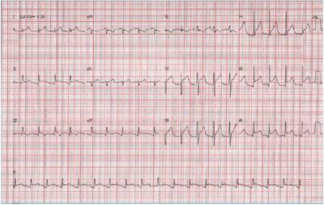
A Tromboembolismo pulmonar.
B Endocardite bacteriana aguda.
C Pericardite aguda.
D Infarto agudo miocárdio.
Revisar: possível letra faltando em enunciado
Questão 21 · Exames complementares · Cardiologia · 4000140605Qual das valvopatias indicadas a seguir é compatível, quando ocorrida isoladamente, com as alterações presentes neste eletrocardiograma?

A Insuficiência aórtica.
B Estenose mitral.
C Insuficiência tricúspide.
D Estenose pulmonar.
Questão 22 · Bloqueios · 4000140592Homem de 68 anos de idade tem insu ciência cardíaca com fração de ejeção de 36%. Está em uso de enalapril 20 mg/dia, furosemida 40 mg/dia, carvedilol 50 mg/dia e espironolactona 25 mg/dia. Durante os últimos meses, persistia com dispneia apenas aos grandes esforços. Procura o pronto-atendimento porque há 7 dias apresenta piora da dispneia (atualmente no repouso), tosse seca e febre baixa (37,9ºC). No exame clínico, está em regular estado geral, consciente e orientado. FC 88 bpm, PA 90x60 mmHg, saturação de oxigênio em ar ambiente: 89%. Ausculta pulmonar com estertores nos em ambas as bases. O último eletrocardiograma presente em prontuário (realizado há um mês) está apresentado a seguir. Qual é a conclusão do laudo do eletrocardiograma?

A Bloqueio atrioventricular total.
B Aneurisma ventricular.
C Ritmo juncional.
D Bloqueio de ramo esquerdo.
Questão 23 · Eletrocardiograma · 4000132805As alterações hidroeletrolíticas podem levar a distúrbios cardíacos, colocando o paciente em risco de intercorrência clínica fatal. São alterações eletrocardiográficas causadas pela hipercalemia, exceto:
A Ondas T apiculadas.
B Achatamento da onda P.
C Alargamento do complexo QRS.
D Encurtamento do intervalo PR.
Questão 24 · Eletrocardiograma · 4000131051Um paciente portador de doença renal crônica dialítica, sem diurese residual, faltou as ultimas sessões de diálise e agora apresenta-se na emergência com quadro de hipercalemia (Potássio de 8,9) e com a gasometria apontando Bicarbonato de 8 meq/L, PH de 7,1, PCO2 de 20mmHg, Sódio de 132, Cloreto de 86. Qual dos achados abaixo
A Achatamento de onda “p”
B Alargamento do “qrs”
C Onda “T” Apiculada
D Aparecimento da onda “U”
Questão 25 · Eletrocardiograma · 4000102263Paciente de 71 anos de idade é atendido em consulta de retorno e traz o eletrocardiograma (ECG) mostrado a seguir. O diagnóstico correto é
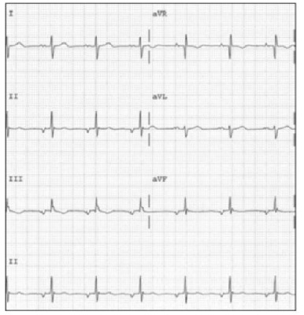
A doença do nó sinusal.
B flutter atrial.
C pré-excitação (Wolf-Parkinson-White).
D ritmo atrial ectópico.
Questão 27 · Potencial de ação · 4000074825Em relação à eletro siologia cardíaca, observando a curva contendo um potencial de ação de uma célula ventricular, pode- se afirmar que na fase:
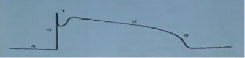
A 1(um) a repolarização parcial se da pelo influxo de Ca++
B 0 (zero) do potencial de ação de uma célula ventricular, ocorre uma despolarização maciça da célula pelo influxo de Na+
C 4 (quatro) ocorre predomínio da corrente de Na+
D 2 (dois), de platô, corre equilíbrio entre o influxo de potássio e o fluxo de cálcio
Questão 28 · Bloqueios · 4000042660Paciente feminina, 06 anos, será submetida à cirurgia eletiva e ao ser examinada notou-se ritmo cardíaco irregular, sem outros sinais ou sintomas. Feito ECG que demonstrou: Baseado na história e ECG, o diagnóstico provável é:

A Arritmia sinusal.
B Bloqueio AV de segundo grau.
C Bloqueio AV de primeiro grau.
D Escape juncional por provável distúrbio eletrolítico.
Questão 29 · Distúrbios da condução atrioventricular · Bloqueios · 4000014510Paciente de 84 anos, evoluindo com quadros de síndromes convulsivas tônicoclônicas de repetição, que se iniciam ao repouso, não acompanhadas de liberação es ncteriana. Procurou consultório do cardiologista, onde chegou deambulando normalmente e, no meio da consulta, apresentou uma síncope, seguida de crise convulsiva. Nesse momento, foi realizado eletrocardiograma abaixo, que confirmou o diagnóstico:
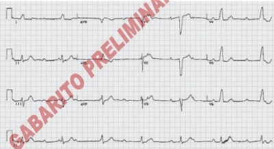
A Bloqueio átrio-ventricular avançado alternante.
B Bloqueio átrio-ventricular do segundo grau.
C Bloqueio átrio-ventricular do tipo 2:1.
D Bloqueio átrio-ventricular do primeiro grau.
E Bloqueio átrio-ventricular total.
Questão 30 · Gluconato de cálcio · Distúrbios eletrolíticos · 4000114925Paciente do sexo masculino, 42 anos de idade, procurou atendimento médico no pronto-socorro de um hospital de nível terciário e relatou que, há 6 dias, tem apresentado episódios de vômitos, anorexia e tremores diários. Informou ser acompanhado nos ambulatórios de cardiologia e de nefrologia. Seu exame físico mostrou pressão arterial de 110 mmHg × 50 mmHg, frequência cardíaca de 41 bpm, temperatura axilar de 37 °C, hipocorado, ritmo cardíaco regular; a ausculta cardíaca da segunda bulha cardíaca permitiu verificar seu desdobramento apenas na fase da expiração; havia sopro sistólico ejetivo, grau 3 de Levine, mais bem audível em foco aórtico, irradiado para as artérias carótidas, e sopro diastólico aspirativo, grau 3 de Levine, mais bem audível em foco aórtico acessório, irradiado para região paraesternal esquerda baixa. Os pulmões estavam limpos. O abdome estava livre e não apresentava visceromegalias. Nas palmas das mãos, foram observadas máculas eritematosas, indolores. Nas polpas digitais das mãos, foram vistos pequenos nódulos dolorosos e violáceos. O paciente apresentou o seguinte eletrocardiograma: Em relação a esse caso, qual o distúrbio eletrolítico mais comum e qual a primeira medicação a ser realizada?
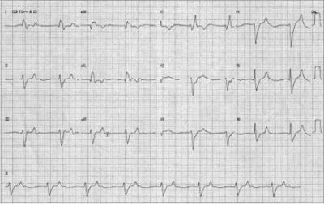
A Hipocalemia/cloreto de potássio
B Hipercalcemia/metoprolol endovenoso
C Hipocalcemia/gluconato de cálcio
D Hipercalemia/atropina
E Hipercalemia/gluconato de cálcio
Questão 31 · Identif icando o local do inf arto · Eletrocardiograma · 4000106146Homem, 49 anos de idade, chega ao pronto-socorro com dor precordial em aperto há 1 hora. É fumante e hipertenso. Foi realizado o eletrocardiograma a seguir na sala de emergência. Qual é o diagnóstico eletrocardiográfico?

A Infarto agudo atual em parede inferior e, possivelmente, anterior.
B Infarto agudo atual em parede inferior e, possivelmente, dorsal.
C Área inativa de parede inferior e, possivelmente, dorsal.
D Área inativa inferior e, possivelmente, anterior.
Questão 32 · Alterações eletrocardiográf icas mais comuns · 4000082185O cor pulmonale pode ser definido como a alteração da estrutura e/ou função do ventrículo direito em quadro de doença pulmonar crônica com o surgimento de hipertensão pulmonar. Logo, o eletrocardiograma de um paciente com cor pulmonale crônico apresentará as seguintes alterações:
A Onda P pulmonale e desvio do eixo para a esquerda.
B Onda P pulmonale, onda R em derivação V1 e onda S em derivações V5 e V6.
C Extrassístoles ventriculares.
D Aumento da duração da onda P, associado a entalhe.
Questão 33 · Tromboembolismo Pulmonar TEP · Eletrocardiograma · Eixo cardíaco · 4000077603NÃO é uma alteração eletrocardiográfica comum na embolia pulmonar:
A inversão da onda T nas derivações V1 - V4
B taquicardia sinual
C desvio do eixo elétrico QRS para a esquerda
D onda S em D1, onda Q em D3 e inversão da onda T em D3
Questão 34 · Distúrbios da condução atrioventricular · Alterações eletrocardiográf icas mais comuns · 4000068760Um senhor de 52 anos de idade procura emergência com quadro de mal estar geral, fraqueza muscular e dispneia com início há 7 dias . Ele relata hipertensão arterial e uso regular de bisoprolol 100mg 2x/dia, enalapril 20mg 2x/dia e espironolactona 25mg/dia. Há 14 dias apresentou quadro de febre e dor de garganta e vem em uso de diclofecano de potássio 50mg 6/6h e sulfametoxazol + trimetoprina 800/160 mg 2x/dia. Ao exame: paciente taquipneico (FR= 36 IRPM), acianótico e anictérico. FC = 55 BPM, PA: 106 x 78 mmHG, Tax: 36,5°C. Ritmo cardiáco regular. Pulmões limpos. Abdômen com peristalse reduzida. Realizado o eletrocardiograma abaixo: Assinale a alternativa que contém o diagnóstico do paciente e a primeira medida terapêutica a ser realizada
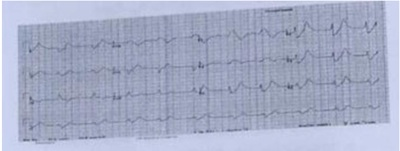
A Hipercalemia; gluconato de cálcio.
B Bloqueio Atriovetricular de 3° grau; suspensão do bisoprolol.
C Hipercalemia; glicoinsulinoterapia.
D Bloqueio Atrioventricular de 3° grau ; marcapasso cardíaco.
Questão 35 · Alterações eletrocardiográf icas mais comuns · 4000067368A utilidade clínica do ECG advém de sua disponibilidade imediata como um exame não invasivo, de baixo custo e muito versátil. Qual o diagnóstico diante da seguinte tríade no exame de ECG: taquicardia sinusal, baixa voltagem de QRS e alternância elétrica?
A Fibrilação atrial.
B Hipercalemia.
C Embolia pulmonar aguda.
D Derrame pericárdico com tamponamento cardíaco.
E Pericardite aguda.
Questão 36 · Alterações eletrocardiográf icas mais comuns · 4000067269Homem, 68 anos de idade, com antecedente pessoal de Diabetes Mellitus, do tipo 2 e tabagismo 40 maços-ano. Trazido ao pronto-socorro devido a quadro de sonolência. Esposa refere ter notado aumento de volume urinário e constipação nos últimos dias, bem como perda de peso não intencional. Ao exame clínico: pressão arterial = 120 x 82 mmHg; frequência cardíaca = 88 batimentos/minuto; frequência respiratória = 10 incursões/minuto. Mau estado geral, descorado, desidratado. Aparelho cardíaco sem alterações. Aparelho respiratório: murmúrios vesiculares abolidos até terço médio de hemitórax esquerdo, sem egofonia. Abdome: indolor à palpação profunda, ausência de massas palpáveis. Realizado eletrocardiograma, reproduzido a seguir. Qual é o distúrbio apresentado pelo paciente em questão?
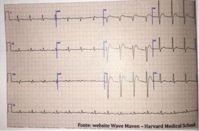
A Hipercalcemia
B Hipocalcemia
C Hipomagnesemia
D Hipopotassemia
Questão 37 · Distúrbios eletrolíticos · 4000031430Na hipocalemia profunda, definida com o potássio sérico inferior a 2,5mEq/L, pode- se encontrar as seguintes manifestações eletrocardiográficas, EXCETO:
A Torsades de pointes.
B Achatamento da onda T.
C Desaparecimento da onda P.
D Surgimento ou proeminência da onda U.
Questão 38 · Exames complementares · Aumentos cavitários · 4000017876Procurou assistência médica uma paciente de 25 anos de idade, que apresentava dispneia aos médios esforços e edema nos membros inferiores, o qual cava mais acentuado no nal da tarde. Ela tinha histórico de amigdalites de repetição. No exame físico, constatou-se pressão arterial de 110 mmHg x 70 mmHg, frequência cardíaca de 92 bpm, saturação de oxigênio = 93% (ar ambiente) e presença de estertores inspiratórios em terço inferior de ambos os hemotórax, à ausculta pulmonar. O exame cardiovascular evidenciou pré-cordio calmo, ictus cordis visível e palpável no 5° espaço intercostal esquerdo, na linha hemiclavicular esquerda, e discreta impulsão no terço inferior da região esternal (no sentido craniocaudal). A ausculta cardíaca mostrou ritmo cardíaco regular em 2 tempos, hiperfonese da primeira bulha em área mitral, na qual, também, foi constatada a presença de sopro diastólico (tipo ru ar) - grau 3 de Levine - seguido de esforço pré-sistólico e de ruído de abertura da mitral, e discreta hiperfonese da segunda bulha em área pulmonar. O abdome apresentava-se livre e sem visceromegalias. O edema era mole, frio, indolor, com sinal de Godet presente, e observado nos dois terços inferiores de ambas as pernas. Foi realizado eletrocardiograma (ECG) de 12 derivações. Considerando esse caso clínico, julgue o item subsecutivo. Com base nas manifestações clínicas observadas, ao pedir o ECG, o médico já deverá inferir que devem estar presentes as seguintes alterações eletrocardiográ cas: eixo elétrico do complexo QRS desviado para a esquerda (acima de -30°); onda P na derivação D2, com duração normal apiculada, com aumento de sua amplitude que indique sobrecarga atrial esquerda; complexo QRS com aumento de tempo de ativação (de exão intrinsecoide); e aumento de amplitude (>30 mm) nas derivações do plano horizontal, o que indica sobrecarga ventricular esquerda.
A Certo.
B Errado.
Revisar: possível letra faltando em enunciado
Questão 39 · Fibrilação Atrial · Distúrbios de ritmo cardíaco · 4000017805Caso clínico- paciente sem doenças prévias; Idade: 19 anos: sexo: feminino; Sinais e sintomas: tremores nas extremidades, nervosismo e palpitações tarquicárdicas (FC = 150 bpm, PA 135 mmHg x 65 mmHg, pulsos radiais palpáveis e arrítimicos); Avaliação cardiovascular evidenciou ictus cordis in situ, ritmo cardíaco irregular em 2 tempos, taquicárdico, bulhas normofonéticas, sem sopros ou ruídos adventícios. Na palpação, percebeu-se glândula tireoide indolor, levemente aumentada e não nodular. Resultado de dosagem séricas: TSH (tirotro na) = 0,05 mU/L (valores de referência = 0,4 - 4,2 mU/L); T4 livre ( tiroxina livre) = 4,0 nanogramas/dL (valores de referência = 0,8 - 2,7 nanograma/dL); anticorpos antirreceptor de TSH (ou Trab) = 2 U/L (valor de referência < 10 U/L); anticorpos antitireoglobulinas = positivo 1/6.400 ( valores de referência não reagente < 1/100); determinação de anticorpos antiperoxidase tireoidiana (anti-TPO) = 70 U/mL ( valores de referência < 35 U/mL). Ecodopplercardiograma = normal. Tira de ritmo eletrocardiográfico (ECG) mostrada na figura a seguir (derivação D2, velocidade do papel: 25 mm/s, calibração: 1 cm= 1 mV). A respeito das informações do caso clínico descrito anteriomente, julgue o item subsequente. A arritimia cardíaca mostrada na tira de ECG é a fibrilação atrial.
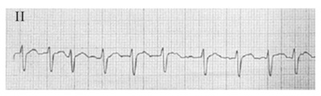
A Certo.
B Errado.
Questão 40 · Alterações eletrocardiográf icas mais comuns · 4000013423Certa paciente de 62 anos de idade, com histórico de hipertensão arterial sistêmica e diabetes mellitus tipo 2, assintomática no momento, traz eletrocardiograma (ECG) de 12 derivações, solicitado por médico em consulta anterior. Com base nesse caso clínico, e considerando-se a reprodução do ECG apresentado, mediante a utilização da Diretriz de Interpretação de Eletrocardiograma de Repouso, da Sociedade Brasileira de Cardiologia, julgue o item a seguir. Considere: FC = 51 spm; intervalo PR = 195 ms; intervalo QRS = 130 ms; intervalo QT = 440 ms. Observa-se uma bradicardia sinusal.
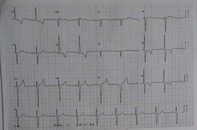
A Certo.
B Errado.
Questão 41 · Alterações eletrocardiográf icas mais comuns · 4000013389Certa paciente de 62 anos de idade, com histórico de hipertensão arterial sistêmica e diabetes mellitus tipo 2, assintomática no momento, traz eletrocardiograma (ECG) de 12 derivações, solicitado por médico em consulta anterior. Com base nesse caso clínico, e considerando-se a reprodução do ECG apresentado, mediante a utilização da Diretriz de Interpretação de Eletrocardiograma de Repouso, da Sociedade Brasileira de Cardiologia, julgue o item a seguir. Considere: FC = 51 spm; intervalo PR = 195 ms; intervalo QRS = 130 ms; intervalo QT = 440 ms. As alterações de onda T em V5-V6 podem ser justificadas pela presença de bloqueio de ramo esquerdo.
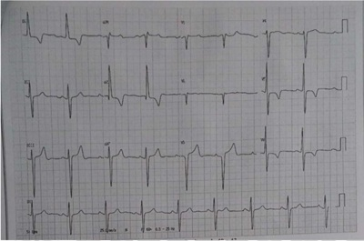
A Certo.
B Errado.
Questão 42 · Alterações eletrocardiográf icas mais comuns · 4000013363Certa paciente de 62 anos de idade, com histórico de hipertensão arterial sistêmica e diabetes mellitus tipo 2, assintomática no momento, traz eletrocardiograma (ECG) de 12 derivações, solicitado por médico em consulta anterior. Com base nesse caso clínico, e considerando-se a reprodução do ECG apresentado, mediante a utilização da Diretriz de Interpretação de Eletrocardiograma de Repouso, da Sociedade Brasileira de Cardiologia, julgue o item a seguir. Considere: FC = 51 spm; intervalo PR = 195 ms; intervalo QRS = 130 ms; intervalo QT = 440 ms. Veri ca-se um bloqueio atrioventricular de primeiro grau.
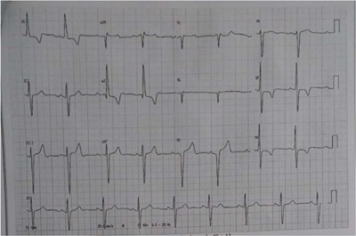
A Certo.
B Errado.
Revisar: possível letra faltando em enunciado
Questão 43 · Alterações eletrocardiográf icas mais comuns · 4000013339Certa paciente de 62 anos de idade, com histórico de hipertensão arterial sistêmica e diabetes mellitus tipo 2, assintomática no momento, traz eletrocardiograma (ECG) de 12 derivações, solicitado por médico em consulta anterior. Com base nesse caso clínico, e considerando-se a reprodução do ECG apresentado, mediante a utilização da Diretriz de Interpretação de Eletrocardiograma de Repouso, da Sociedade Brasileira de Cardiologia, julgue o item a seguir. Considere: FC = 51 spm; intervalo PR = 195 ms; intervalo QRS = 130 ms; intervalo QT = 440 ms. Observa-se um bloqueio divisional posteroinferior esquerdo.
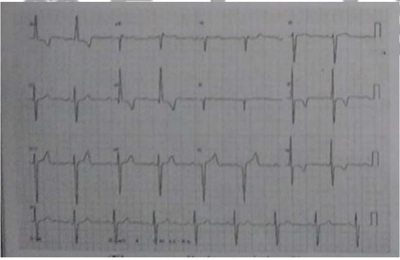
A Certo.
B Errado.
Questão 45 · Distúrbios eletrolíticos · 4000127509Mulher de 65 anos é trazida por sua lha à unidade de emergência confusa e desorientada, queixando-se de cãimbras e formigamento nas mãos. Foi submetida à tireoidectomia por nódulos há 2 dias. No exame físico, observam-se sinais de Chvostek e Trousseau. O achado eletrocardiográfico esperado neste caso é
A pré-excitação com onda Delta.
B presença de onda U.
C alargamento de intervalo QT.
D encurtamento do QRS.
E inversão de onda T.
Questão 46 · Eletrocardiograma · Aumentos cavitários · 4000113782Classicamente o S1Q3T3 é um achado eletrocardiográfico de que doença?
A Tromboembolismo pulmonar.
B IAM de ventrículo direito.
C Tamponamento pericárdico.
D Pericardite.
Questão 47 · Aumentos cavitários · Complexo QRS · Quadro clínico · 4000113778Qual das emergências cardiológicas ocorre alternância elétrica no ECG?
A IAM após trombólise.
B Intoxicação digitálica.
C Tamponamento pericárdico.
D Hipotermia.
Questão 48 · Alterações eletrocardiográf icas mais comuns · 4000098768Mulher, 43a, em investigação por fraturas recorrentes por pequenos traumas. Antecedentes pessoais: hipertensão arterial, nefrolitíase e constipação intestinal há dois anos. Inventário ósseo: fratura de rádio e ulna esquerdos e de calcâneos consolidadas, osteopenia intensa em ossos da mão e crânio com aspecto em sal e pimenta. O achado eletrocardiográfico mais provável é:
A Ondas T apiculadas.
B Elevação do segmento ST.
C Encurtamento do intervalo QT.
D Bloqueio AV do segundo grau Mobitz II.
Questão 49 · Eletrocardiograma · 4000071614Um paciente idoso sofreu fratura espontânea de fêmur em sua residência e permaneceu no chão, sem conseguir pedir ajuda, por dois dias, até que fosse socorrido. Ele foi trazido para a sala de emergência torporoso, sendo impossível colher anamnese. Qual a alteração encontrada no eletrocardiograma abaixo?
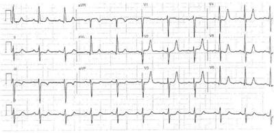
A Hipercalcemia.
B Hipercalemia.
C Hipocalemia.
D Hipocalcemia.
E Hipomagnesemia.
Questão 50 · Eletrocardiograma · Alterações eletrocardiográf icas mais comuns · Distúrbios eletrolíticos · 4000027923São alterações eletrocardiográficas em pacientes com hipercalemia, EXCETO:
A Apiculamento de onda T.
B Prolongamento do intervalo P-R.
C Aumento da amplitude da onda P.
D Alargamento do complexo QRS.
Questão 51 · Alterações eletrocardiográf icas mais comuns · 4000013996Considerando o ritmo eletrocardiográfico apresentado na figura precedente - derivação: D2; velocidade do papel 25 mm/seg; calibração: 1cm = 1 mV - , julgue o seguinte item. A arritmia observada nessa tira de ritmo é a extrassístole supraventricular com pausa compensatória.
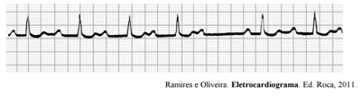
A Certo.
B Errado.
Questão 52 · Distúrbios da condução atrioventricular · Bloqueios · 4000013988Considerando o ritmo eletrocardiográfico apresentado na figura precedente - derivação: D2; velocidade do papel 25 mm/seg; calibração: 1cm = 1 mV - , julgue o seguinte item. A arritmia apresentada decorre diretamente de um distúrbio na propriedade cronotrópica do nó sinusal.
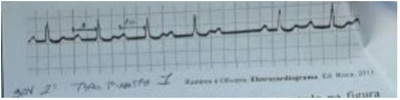
A Certo.
B Errado.
Questão 53 · Cardiopatia hipertróf ica · Eletrocardiograma · Cardiomiopatia hipertróf ica · 4000103275Homem, 33 anos, assintomático, procura atendimento médico para realização de atividade física em academia. Nega hipertensão, diabetes mellitus, dislipidemia e tabagismo. Pai faleceu aos 39 anos de idade por morte súbita. Exame físico: FC = 72 bpm; PA = 130 x 80 mmHg; ritmo cardíaco regular; bulhas normofonéticas; sopro mesossistólico 3+/6+ em borda esternal esquerda média, cuja intensidade diminui com o agachamento e aumenta com a posição ortostática. Vide eletrocardiograma: Qual é a hipótese diagnóstica mais provável?
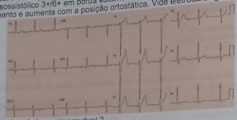
A Coarctação da aorta.
B Cardiomiopatia hipertrófica.
C Displasia arritmogênica do ventrículo direito.
D Estenose aórtica.
Questão 54 · Síndrome de Wolf f ParkinsonWhite · Eletrocardiograma · 4000090839Menino de 14 anos, com palpitações seguidas de tonturas ao realizar exercícios na escola, foi encaminhado para avaliação. A liberação para a realização das atividades físicas estaria condicionada aos resultados dos exames. O eletrocardiograma de repouso está reproduzido abaixo: O quadro clínico e o traçado eletrocardiográfico de repouso estabelecem o diagnóstico de:
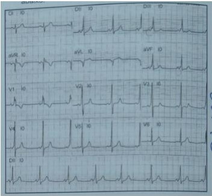
A Bloqueio de ramo esquerdo.
B Taquicardia atrial paroxística.
C Síndrome de Wolff-Parkinson-White.
D Fibrilação atrial paroxística.
E Arritmia sinusal.
Questão 55 · Alterações eletrocardiográf icas mais comuns · 4000088107Alguns distúrbios eletrolíticos causam arritmias cardíacas. A hiperpotassemia é considerada um dos de manifestações mais graves, recomendando para maior segurança, monitoração eletrocardiográ ca. Das alterações abaixo, a primeira manifestação eletrocardiográfica da hiperpotassemia é:
A Achatamento da onda P.
B Onda P pontiaguda.
C Prolongamento de intervalo PR.
D Alargamento do complexo QRS.
E Onda T pontiaguda e encurtamento do intervalo QT.
Revisar: possível letra faltando em enunciado
Questão 56 · Aumentos cavitários · 4000054531Você avalia um paciente novo na clínica. Na ausculta, você percebe sopro diastólico em decrescendo, de alta frequência, mais bem audível no 3° espaço intercostal ao longo da borda esternal esquerda. Um 2° sopro é audível no ápice cardiaco, o qual constitui um sopro mesodiastólico, de baixa frequência em ru ar. Hand-grip sustentado aumenta a intensidade dos sopros. Os sopros são audiveis com nitidez ao nal da expiração. Também há presença de sopro de ejeção sistólica e B₃. O impulso ventricular esquerdo está deslocado para a esquerda e inferiormente. Os pulsos radiais são fortes, com um componente sistólico proeminente. A pressão arterial é de 170/70 mmHg, a frequência cardíaca de 98 bpm e a resporatória é de 18 irpm. Feito um eletrocardiograma (ECG) na clínica. Qual dos seguintes achados você espera encontrar no traçado do ECG deste paciente?
A Depressão do segmento PR e elevação do segmento ST difusa.
B Ondas Q inferiores.
C Hipertrofia ventricular esquerda.
D Baixa voltagem.
E Aumento do átrio direito.
Questão 57 · Onda T · 4000052050Em relação ao eletrocardiograma, assinale a alternativa CORRETA:
A O intervalo PR corresponde à despolarização atrial e à despolarização do nó atrioventricular, e sua duração normal é de 0,10 a 0,20 segundos.
B O QRS corresponde à despolarização e à repolarização ventricular e sua duração máxima é de 0,12 segundos.
C A onda T normal é assimétrica e corresponde à repolarização ventricular.
D A onda U normal é negativa e corresponde à repolarização das fibras de Purkinje.
E A onda P corresponde à despolarização atrial; sua duração normal máxima é de 0,04 segundos e a amplitude máxima é de 2,5 mm.
Questão 58 · Distúrbios eletrolíticos · 4000033146Mariana 62 anos está em pós-operatório, 9° DPO, de uma gastrectomia total que evoluiu com fístula digestiva. Relata quadro de fraqueza e hipore exia. Realizado um ECG que mostrou com ondas T largas e achatadas, depressão do segmento ST e prolongamento do intervalo QT. Considerando o caso descrito, o distúrbio eletrolítico MAIS provável seria:
A Hipercalcemia
B Hipermagnesemia
C Hipocalemia
D Hiponatremia
Questão 59 · Eletrocardiograma · Estratif icação de risco cardiovascular · 4000128308Mulher assintomática e previamente sadia, não fumante, de 29 anos, fez uma avaliação cardiológica para frequentar academia de ginástica e o Eletrocardiograma (ECG) da figura. (VER IMAGEM) O ecodopplercardiograma não mostrou cardiopatia estrutural e o teste ergométrico foi não isquêmico. Sobre o caso apresentado, a conduta a ser tomada será:
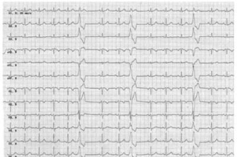
A Prescrição de amiodarona e liberar para a academia.
B Fazer ressonância magnética antes de liberá-la.
C Liberar para a academia sem restrições.
D Orientá-la a evitar realizar exercícios físicos.
E Solicitar angiotomografia das coronárias.
Questão 60 · Diagnóstico · Alterações eletrocardiográf icas mais comuns · 4000126371Os achados que podem ser comumente encontrados no eletrocardiograma de um portador de Hipertensão Arterial Pulmonar (HAP) são os seguintes, EXCETO:
A Sobrecarga atrial direita.
B Bloqueio de ramo direito.
C s1q3t3.
D Alteração de repolarização ventricular.
E Bloqueio divisional anterossuperior.
Questão 61 · Bloqueios · 4000121961Uma mulher de 58 anos portadora de miocardiopatia chagásica procura o prontosocorro com queixa de cansaço e episódios de síncope ao se levantar. Apresenta: P = 42 bpm; PA = 96 x 58 mmHg; FR = 18 irpm; saturação de O2 = 94% em ar ambiente. Recebe atropina em dose máxima, sem resposta. O monitor mostra: O diagnóstico é de:
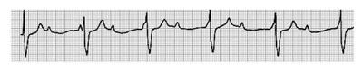
A Ritmo juncional.
B Bradicardia sinusal.
C Bloqueio atrioventricular de 2º grau, Mobitz I.
D Bloqueio atrioventricular de 3º grau.
E Bloqueio atrioventricular de 2º grau, Mobitz II.
Questão 62 · Distúrbios eletrolíticos · 4000085821Paciente de 58 anos com história de hipertensão arterial sistêmica em uso de enalapril 20 mg a cada 12 horas e anlodipino 10 mg ao dia, nefropatia hipertensiva em hemodiálise. Abandonou o tratamento por um mês e procurou a emergência por dispneia e astenia. Ao exame, apresenta: FC = 112 bpm; FR = 34 irpm; T = 36,9°C; PA = 110 x 62 mmHg; bulhas cardíacas rítmicas, hipofonéticas, murmúrio vesicular abolido em bases pulmonares e anasarca. Considerando o caso, assinale a assertiva que contém a alteração eletrocardiográfica mais provável neste paciente:
A Presença de onda Q patológica em parede inferior.
B Achatamento de onda T e presença de onda U.
C Intervalo PR menor que 0,04 segundos.
D Aumento da amplitude da onda P.
E Ondas T apiculadas.
Questão 63 · Exames complementares · Aumentos cavitários · 4000078015Considere o eletrocardiograma a seguir. (VER IMAGEM) Esse eletrocardiograma será provavelmente encontrado no caso de um paciente cujas características são:

A Mulher de 51 anos com hiperfonese de B1, sopro diastólico 3+/6 e sopro sistólico 2+/6+ em foco aórtico.
B Homem de 67 anos com hipofonese de bulhas e sopro ejetivo, em crescendo e decrescendo em foco aórtico 3+/6+.
C Mulher de 42 anos com hipofonese de B1 e sopro holossistólico 4+/6 em foco mitral com irradiação para a axila.
D Homem de 37 anos, apresentando hiperfonese de B1 e sopro diastólico em ruflar 2+/6+ em foco mitral.
Questão 64 · Bloqueios · 4000066983Paciente de 52 anos, hipertenso e tabagista de longa data, se encontra internado em unidade coronariana em reabilitação no terceiro dia após um infarto agudo do miocárdio de parede inferior. O paciente se queixa de mal-estar e tonteiras. Ao exame físico, além da presença de uma quarta bulha e de hipotensão arterial, é observada uma irregularidade do ritmo cardíaco, caracterizada por pausas ventriculares precedidas ritmicamente por uma redução progressiva da intensidade da primeira bulha. No eletrocardiograma, é observada a presença de onda Q e inversão de onda T nas derivações D2, D3 e aVF, além de eventuais ondas P não seguidas por complexos QRS. O diagnóstico apropriado para o caso é:
A Pausas sinusais.
B Bloqueio atrioventricular de 2º grau Mobitz I.
C Bloqueio atrioventricular de 2º grau Mobitz II.
D Taquicardia paroxística supraventricular com bloqueio 2:1.
Questão 65 · Distúrbios eletrolíticos · 4000056912Qual das seguintes alterações eletrocardiográficas está associada à hipercalemia aguda?
A Alargamento do QRS.
B Prolongamento do segmento ST.
C Redução no intervalo PR.
D Proeminência das ondas U.
E Achatamento da onda T.
Questão 66 · Bloqueios · 4000048365Considere o eletrocardiograma a seguir. (VER IMAGEM) Em relação a esse traçado eletrocardiográfico, assinale a alternativa CORRETA:
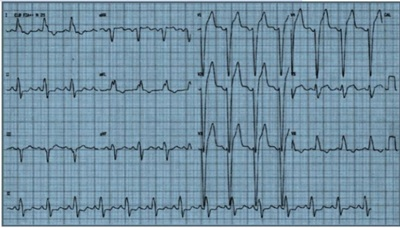
A Trata-se de bloqueio completo do ramo direito.
B Trata-se de bloqueio completo do ramo esquerdo.
C Trata-se de infarto agudo do miocárdio com supradesnivelamento do segmento ST de parede anterior.
D Trata-se de síndrome isquêmica aguda sem supradesnivelamento do segmento ST.
E Trata-se de taquicardia ventricular.
Questão 67 · Distúrbios eletrolíticos · 4000038051Analise o eletrocardiograma a seguir e assinale a alternativa que apresenta a condição clínica que leva a suas alterações:
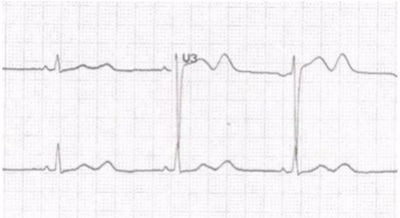
A Hipercalemia
B Acidemia
C Hipocalemia
D Hipotermia
Questão 68 · Identif icando o local do inf arto · Segmento ST · 4000125278Paciente homem, 66 anos, hipertenso, diabético tipo 2, dislipidêmico, admitido com quadro de dor torácica retroesternal opressiva, sem irradiação, iniciada há cerca de dez minutos antes do atendimento. Seu primeiro eletrocardiograma revelou- se normal. Foi indicado novo eletrocardiograma após quinze minutos da realização do primeiro. Qual dos parâmetros abaixo NÃO se observa na evolução eletrocardiográfica do caso?
A Simetria da onda T.
B Aumento da amplitude da onda S.
C Surgimento de onda Q.
D Infradesnivelamento do segmento ST.
E Supradesnivelamento do segmento ST.
Questão 69 · Alterações eletrocardiográf icas mais comuns · 4000010462Homem, 58 anos, etilista, morador de rua, encontrado desacordado em via pública e trazido pelo SAMU ao serviço de emergência. Realizado eletrocardiograma abaixo, qual o provável diagnóstico? (VER IMAGEM)
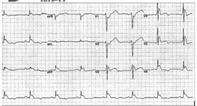
A Infarto agudo do miocárdio com supra desnivelamento do segmento ST anterolateral.
B Hipercalemia.
C Pericardite.
D Hipotermia.
E Infarto agudo do miocárdio com supra desnivelamento do segmento ST inferior.
Questão 70 · Aumentos cavitários · 4000116871Observe o eletrocardiograma abaixo. Este eletrocardiograma mostra a presença de:
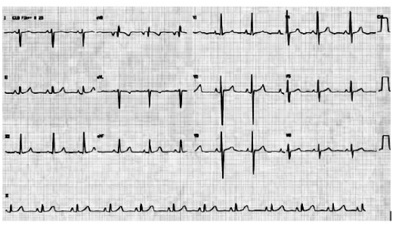
A Pericardite crônica.
B Insuficiência mitral.
C Infarto do miocárdio prévio.
D Hipertrofia ventricular direita.
E Cardiomiopatia hipertrófica.
Questão 71 · Alterações eletrocardiográf icas mais comuns · 4000084874O traçado eletrocardiográfico a seguir é de um jovem de 17 anos com acometimento valvar decorrente de febre reumática. O diagnóstico MAIS PROVÁVEL é:
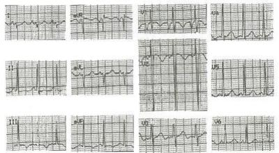
A Estenose mitral com hipertensão pulmonar.
B Estenose tricúspide com hipertensão pulmonar.
C Regurgitação aórtica sem hipertensão pulmonar.
D Regurgitação mitral sem hipertensão pulmonar.
Questão 72 · Rotina de avaliação do eletrocardiograma · 4000082847O eletrocardiograma abaixo é de um homem de 60 anos que procurou a emergência devido à tontura. (VER IMAGEM) A frequência cardíaca do paciente no momento do exame devia ser de, aproximadamente:
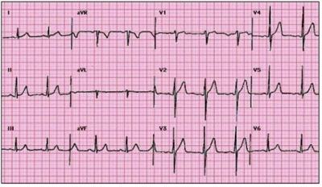
A 60.
B 65.
C 70.
D 75.
Questão 73 · Hipercalcemia · Eletrocardiograma · Alterações eletrocardiográf icas mais comuns · 4000080339Mulher de 48 anos, com diagnóstico prévio de câncer de mama é admitida devido a quadro de letargia, anorexia, fraqueza e episódios de confusão mental. O exame neurológico não evidencia dé cit focal algum, nem rigidez de nuca. No eletrocardiograma existe encurtamento do intervalo QT. O diagnóstico mais provável é de:
A Hipercalcemia.
B Hiperpotassemia.
C Hipomagnessemia.
D Metástase cerebral.
E Carcinomatose meníngea.
Questão 74 · Distúrbios eletrolíticos · 4000000896Paciente de 65 anos admitido com história de ser portador de hipertensão arterial fazendo uso de hidroclorotiazida e losartana, é admitido no pronto-socorro apresentando depressão do segmento ST, achatamento das ondas T e ondas U proeminentes. Qual o distúrbio hidroeletrolítico mais provável:
A Hipocalcemia.
B Hiponatremia
C Hipocalemia.
D Hipomagnesemia.
E Hipercalemia.
Questão 75 · Rotina de avaliação do eletrocardiograma · 4000101883Assinale, dentre as alternativas a seguir, qual é a angulação no plano frontal do vetor da derivação aVL, no eletrocardiograma.
A +30°.
B -30°.
C +60°.
D -60°
Questão 76 · Eletrocardiograma · Intervalo PR · 4000074622O infradesnivelamento do segmento PR é sinal eletrocardiográfico de:
A Tamponamento pericárdico.
B Pericardite aguda.
C Síndrome de pré-excitação.
D Cor pulmonale.
Questão 77 · Eletrocardiograma · 4000073473A duração da onda P pode estar relacionada à condução intra ou interatrial. A duração da onda P, considerada normal no traçado eletrocardiográfico, é de até:
A 200ms.
B 90ms.
C 440ms.
D 70ms.
E 120ms.
Questão 78 · Alterações eletrocardiográf icas mais comuns · 4000100158Analisando o ECG abaixo, qual o diagnóstico? (VER IMAGEM)
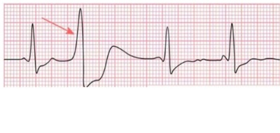
A Normal
B Extrassístole atrial
C Extrassístole ventricular
D Taquicardia ventricular
E Bloqueio de Ramo D
Questão 79 · Eletrocardiograma · 4000071847O laudo de radiogra a simples de tórax PA, de um adolescente com passado de febre reumática, citava duplo contorno atrial, protrusão da auriculeta no bordo cardíaco esquerdo, ângulo da carina alargado e deslocamento cranial do brônquio- fonte esquerdo. Os ramos da artéria pulmonar tinham diâmetro normal. No eletrocardiograma desse rapaz, é mais provável que a onda P tenha o seguinte padrão:
A Bífida, com duração = 0,14s, em D1 e D2.
B Monofásica, com duração = 0,09s, em aVF e V1.
C Arredondada, com amplitude = 2,2 mm, em D1 e aVL.
D Pontiaguda, com amplitude = 2,8 mm, em D2, D3 e aVF.
Questão 80 · Eletrocardiograma · Alterações eletrocardiográf icas mais comuns · 4000031253Comorbidades e outras causas de dor torácica Um homem de 60 anos procura serviço de urgência com dispneia e dor torácica de aparecimento súbito. Com base no quadro clínico e no eletrocardiograma reproduzido (VER IMAGEM), o diagnóstico mais provável é: Respostas: 1 12 23 34 45 56 67 78
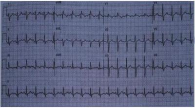
A Dissecção aórtica tipo B.
B Infarto do miocárdio da parede lateral do ventrículo esquerdo.
C Pericardite aguda.
D Tromboembolismo pulmonar agudo.